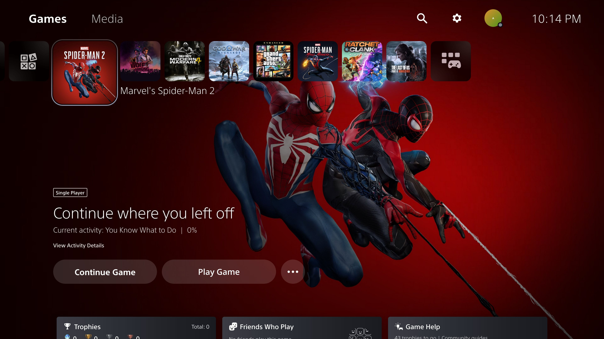
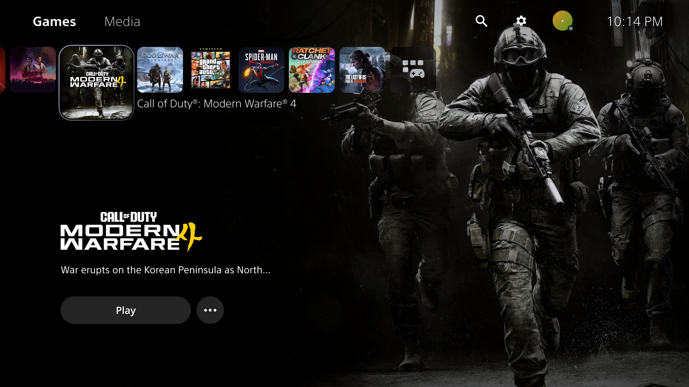
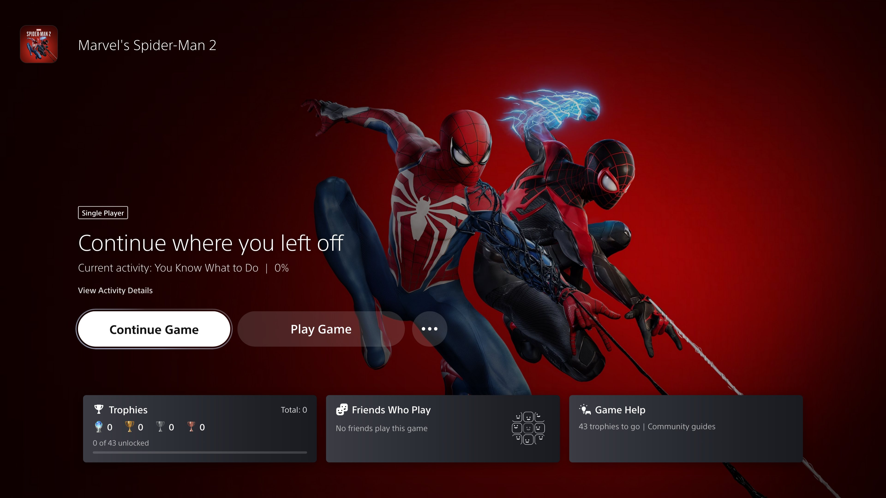
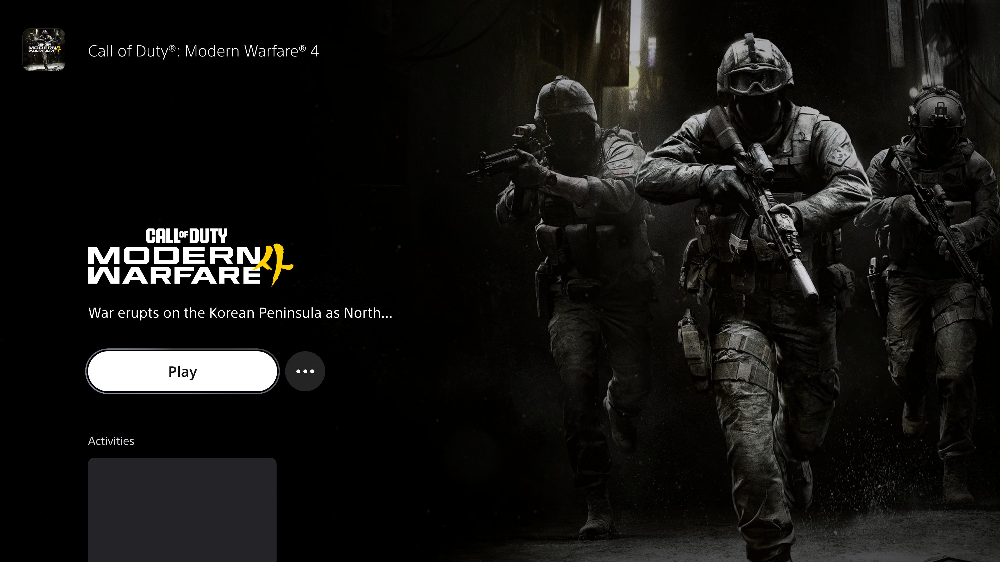

Home and game pages
Every game gets its own page.
Move along the row and the whole screen follows: full-screen art, the game's logo and one big Play button.
Pick up right where you left off.
Story games open on your progress: your current activity, how far you are and what's next. Continue Game takes you straight back in.
- Your current activity and how far you are
- Trophies earned, with a card to open them
- Friends who play the same game, and Game Help guides


One big Play button.
Every game shows its logo and a short description over its own art, with Play and a menu for the rest. Press Down for more.
Press Down for the game's page.
The icon and the name fly up to the top, and the page opens with everything about that game in one place.


Make your PC feel like a console.
Free for Windows 10 and 11. Works with Steam, Epic Games and any game on your PC.
Download Game Launcher